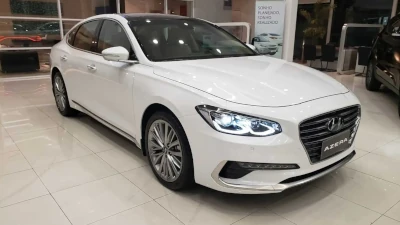
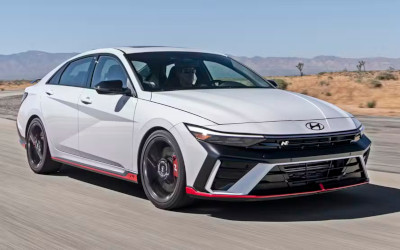
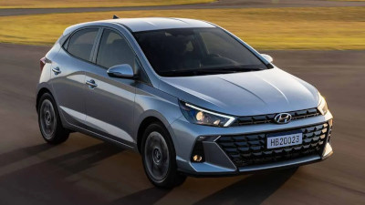

HYUNDAI FUNDAÇÃO
A Hyundai Motor Company, é uma multinacional sul-coreana de automóveis sediada em Seul, Coreia do Sul, fundada em 29 de dezembro de 1967 por Chung Ju-Yung, que em 1947 já havia fundado a Hyundai Engineering and Construction Company. Em 1948, começou a construir viaturas na época tinha um acordo com a empresa norte-americana Ford para produzir carros desta marca apenas para o mercado interno. Saiba mais em https://pt.wikipedia.org/wiki/Hyundai_Motor_Company
HYUNDAI AZERA
De 1986 a 1996, o Grandeur foi o carro-chefe da gama sul-coreana da Hyundai antes do lançamento do Hyundai Dynasty. O Grandeur evoluiu ao longo de cinco gerações e é comercializado sob vários nomes em todo o mundo principalmente como Hyundai Azera. Como o Azera, foi o carro-chefe da Hyundai nos Estados Unidos e Canadá até a chegada do sedã Genesis. Após o lançamento da marca Genesis separada, o Azera retomou seu lugar como carro-chefe da empresa.
HYUNDAI ELANTRA
O Elantra é um sedan médio, produzido pela Hyundai Motor Company , lançado em 1990. Sucedeu ao Stellar. Em sua atual geração(a 5ª), lançada em 2010, o desenho segue a filosofia escultura fluída e assemelha-se ao do modelo maior, Sonata. Possui também as versões Coupé, lançada em 2012 e Station Wagon, presente nos anos 90 e atualmente; através da versão SW do i30; que nos Estados Unidos é vendido como Elantra Touring. O modelo é fabricado em Ulsan, na Coreia do Sul, e seu modelo 2014 é equipado com seis airbags, controle de estabilidade e de tração, freios ABS com distribuição eletrônica da força de frenagem (EBD) e assistente de frenagem. Motor 5ª geração: 2.0L I4 16V G Transmissão: 4 marchas-automatica, 5 marchas-manual.
HYUNDAI HB20
O HB20 deu início a nova linha HB, que significa "Hyundai Brasil", que trouxe um crossover compacto chamado HB20X e um sedan chamado HB20S. O modelo entrou no mercado dos hatchs para concorrer com Volkswagen Gol, Fiat Palio, Ford Ka, Peugeot 207, Renault Sandero, Toyota Etios e Chevrolet Onix.
HYUNDAI I30-N

O i30 é um modelo compacto (segmento C) da Hyundai, fabricado na Coreia, já é oferecido ao mercado desde abril de 2009. Concorre com os modernos Citroën C4, Peugeot 308 (Carro do ano na Europa 2014), Citroën C4 Lounge (CAR Awards 2014), Fiat Bravo, Ford Focus e Renault Mégane. É importado e revendido pelo grupo Caoa. Na Europa o modelo é fabricado na República Checa, na fábrica Hyundai Motor Manufacturing Czech, na cidade de Nošovice.
HYUNDAI VELOSTER-N

Hyundai Veloster é um hatchback cupê compacto desportivo fabricado pela Hyundai. Inspirado no conceito Veloster apresentado em 2007, teve início de vendas previsto para o segundo semestre de 2011. Foi lançado em 10 de janeiro de 2011 no salão do automóvel de Detroit. É considerado um carro conceito de três portas e com teto de vidro. Seu nome é resultado da combinação das palavras "velocity" e "roadster", formando "Veloster". A plataforma do carro é baseada na dianteira e rodas do Hyundai Accent e do Hyundai Elantra.